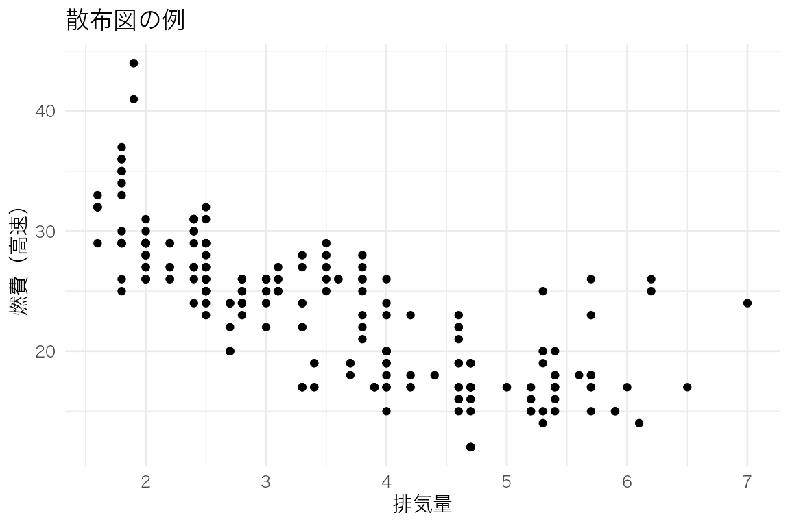
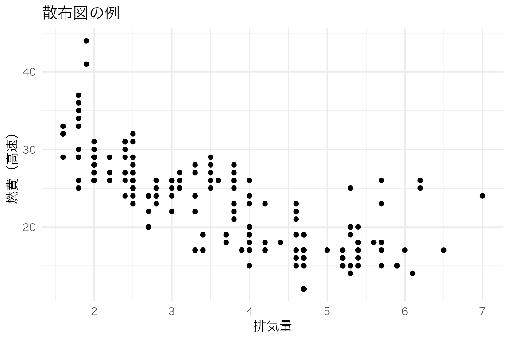
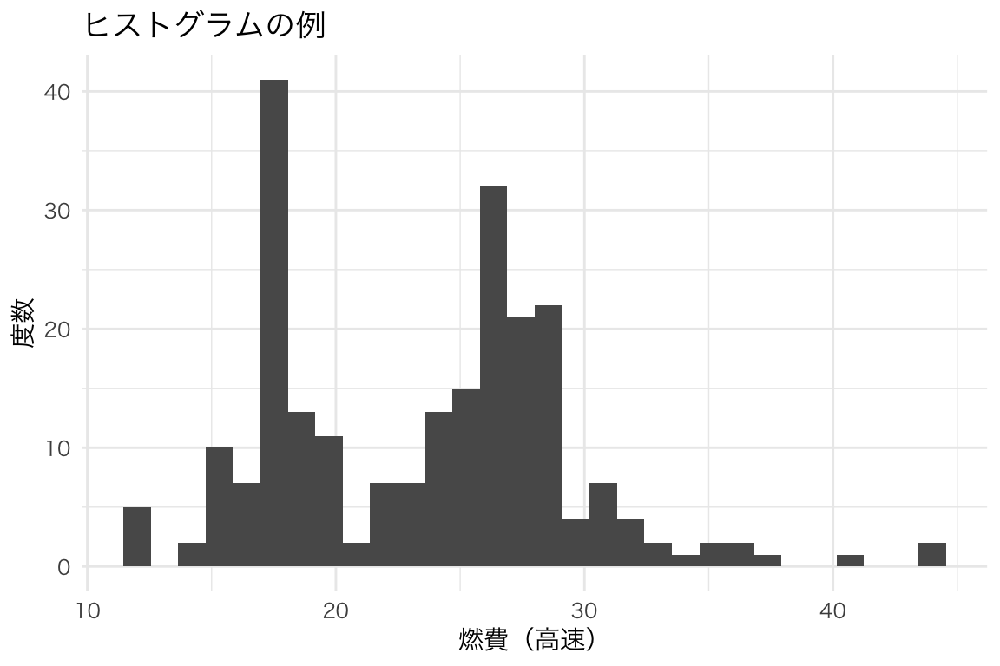
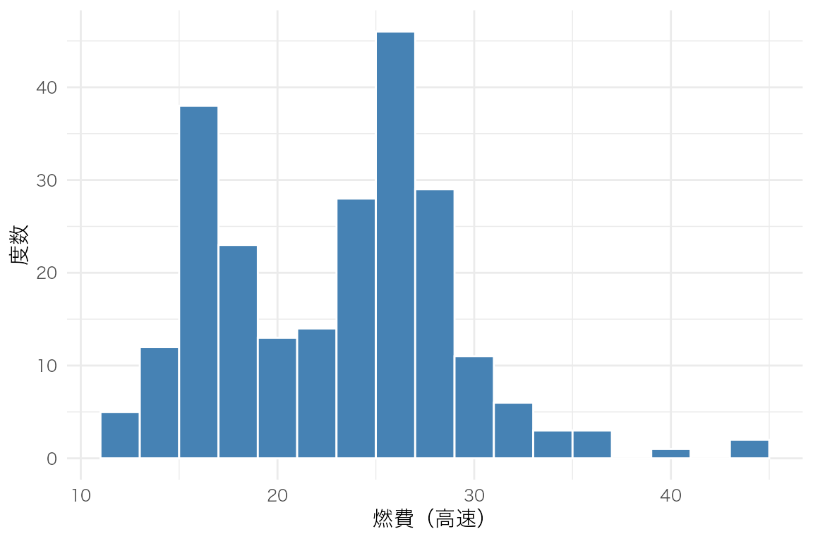
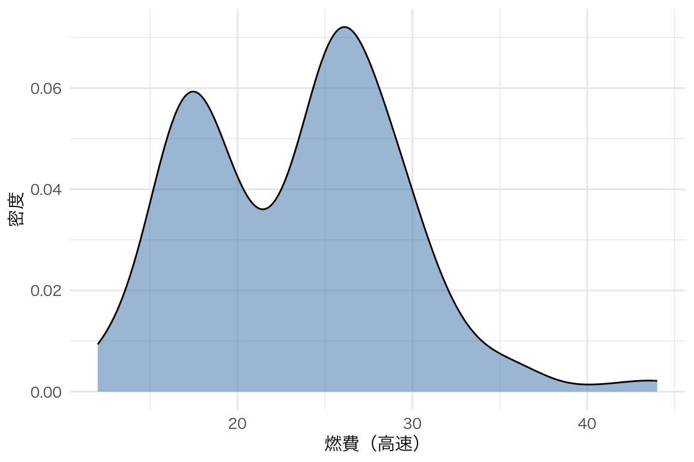
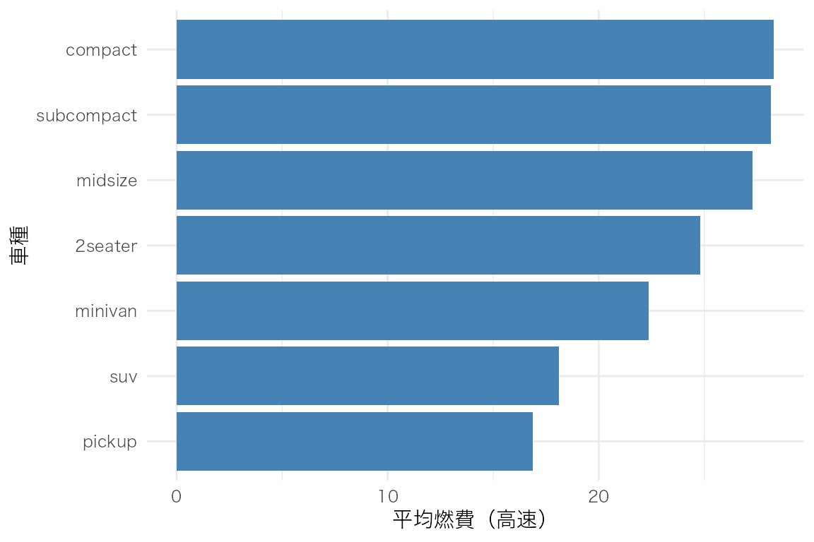
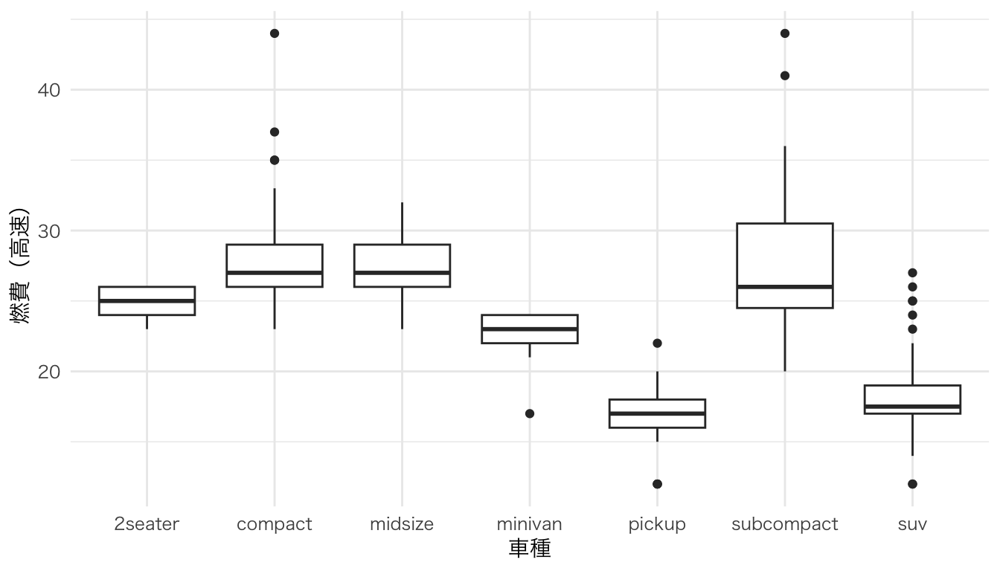
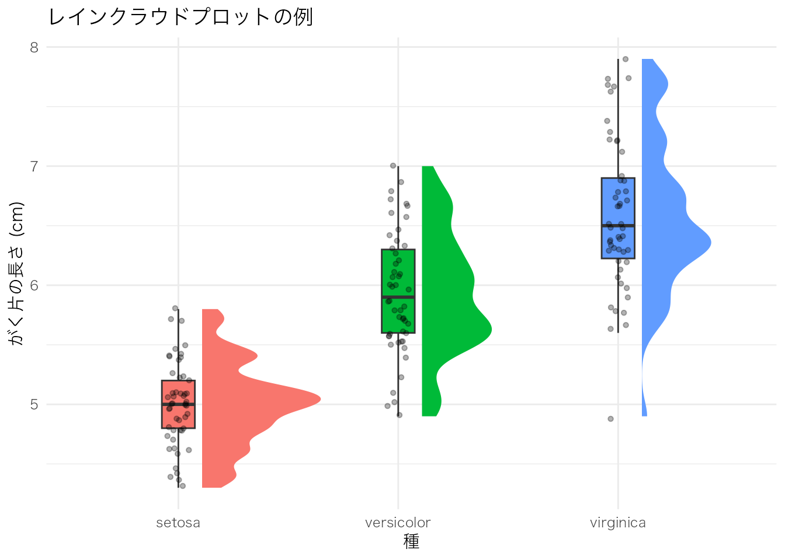
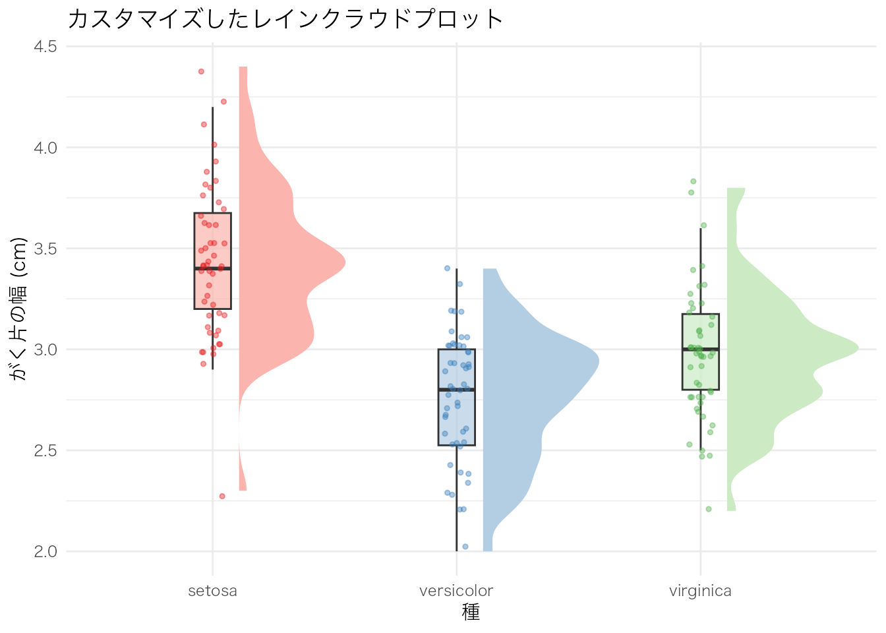

ggplot(mpg, aes(x = displ, y = hwy)) +
geom_point() +
labs(x = "排気量", y = "燃費（高速）", title = "散布図の例")
この章では、ggplot2で描ける様々な図を紹介します。「こんな図を描きたい！」と思ったら、対応するコードを参考にしてください。
ggplot(data, aes(x = 変数1, y = 変数2)) +
geom_xxx() # 図の種類data：使用するデータフレームaes()：軸や色などの「見た目」と変数の対応geom_xxx()：図の種類（点、線、棒など）2つの連続変数の関係を見る。
ggplot(mpg, aes(x = displ, y = hwy)) +
geom_point() +
labs(x = "排気量", y = "燃費（高速）", title = "散布図の例")
ggplot(mpg, aes(x = displ, y = hwy, color = class)) +
geom_point() +
labs(x = "排気量", y = "燃費（高速）", color = "車種")
ggplot(mpg, aes(x = displ, y = hwy)) +
geom_point() +
geom_smooth(method = "lm") +
labs(x = "排気量", y = "燃費（高速）")
連続変数の分布を見る。
ggplot(mpg, aes(x = hwy)) +
geom_histogram() +
labs(x = "燃費（高速）", y = "度数", title = "ヒストグラムの例")
ggplot(mpg, aes(x = hwy)) +
geom_histogram(binwidth = 2, fill = "steelblue", color = "white") +
labs(x = "燃費（高速）", y = "度数")
分布を滑らかな曲線で表す。
ggplot(mpg, aes(x = hwy)) +
geom_density(fill = "steelblue", alpha = 0.5) +
labs(x = "燃費（高速）", y = "密度")
ggplot(mpg, aes(x = hwy, fill = drv)) +
geom_density(alpha = 0.5) +
labs(x = "燃費（高速）", y = "密度", fill = "駆動方式")
カテゴリごとの度数や集計値を表す。
ggplot(mpg, aes(x = class)) +
geom_bar() +
labs(x = "車種", y = "台数")
mpg |>
group_by(class) |>
summarize(mean_hwy = mean(hwy)) |>
ggplot(aes(x = reorder(class, mean_hwy), y = mean_hwy)) +
geom_col(fill = "steelblue") +
labs(x = "車種", y = "平均燃費（高速）") +
coord_flip()
グループ間の分布を比較。
ggplot(mpg, aes(x = class, y = hwy)) +
geom_boxplot() +
labs(x = "車種", y = "燃費（高速）")
箱ひげ図＋分布の形状。
ggplot(mpg, aes(x = class, y = hwy)) +
geom_violin(fill = "steelblue", alpha = 0.5) +
geom_boxplot(width = 0.1) +
labs(x = "車種", y = "燃費（高速）")
時系列や順序のあるデータ。
economics |>
ggplot(aes(x = date, y = unemploy)) +
geom_line() +
labs(x = "年", y = "失業者数（千人）", title = "アメリカの失業者数推移")
グループごとに別々のパネルで表示。
ggplot(mpg, aes(x = displ, y = hwy)) +
geom_point() +
facet_wrap(~ class) +
labs(x = "排気量", y = "燃費（高速）")
2つのカテゴリ変数のクロス集計。
mpg |>
count(class, drv) |>
ggplot(aes(x = drv, y = class, fill = n)) +
geom_tile() +
geom_text(aes(label = n), color = "white") +
scale_fill_viridis_c() +
labs(x = "駆動方式", y = "車種", fill = "台数")
mtcars |>
select(mpg, cyl, disp, hp, wt) |>
cor() |>
as.data.frame() |>
rownames_to_column("var1") |>
pivot_longer(-var1, names_to = "var2", values_to = "cor") |>
ggplot(aes(x = var1, y = var2, fill = cor)) +
geom_tile() +
geom_text(aes(label = round(cor, 2))) +
scale_fill_gradient2(low = "blue", mid = "white", high = "red", midpoint = 0) +
labs(x = "", y = "", fill = "相関係数") +
theme(axis.text.x = element_text(angle = 45, hjust = 1))
# 最後に描いた図を保存
ggsave("figure.png", width = 6, height = 4, dpi = 300)
# 特定の図を保存
p <- ggplot(mpg, aes(x = displ, y = hwy)) + geom_point()
ggsave("scatter.pdf", plot = p, width = 6, height = 4)